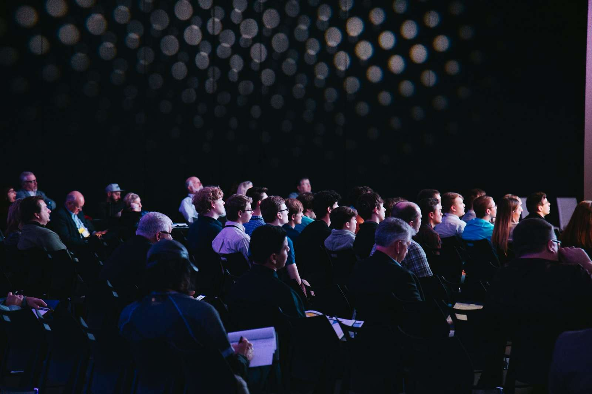

The promise Toronto & the GTA
Build what matters, with believers down the street.
Banaro connects Christian founders, engineers, designers and product managers across Toronto and the GTA — so you can find collaborators, share what you're making, and meet in person.

Toronto — The best collaborator for the thing you are building may live a streetcar ride away. That is the plain wager behind Banaro, which as of this edition counts 1,284 builders across Toronto and the GTA: founders and engineers, designers and product managers who build products and want to do it alongside other believers nearby.
The directory lets a builder find another by skill, role and neighbourhood. A product designer in Markham, a backend engineer in the Annex and a founder in Leslieville can see one another's skills, what each is building and what each is open to — co-founding, advising or contributing — and then meet over coffee rather than over a video call.
The showcase now carries 312 projects, from volunteer scheduling for GTA food banks to scripture memory with spaced repetition. Each asks for something specific: feedback, a contributor, a co-founder.
Matching has made 96 co-founder introductions. A founder describes what they are building and who they need; every Monday, Banaro suggests three builders nearby.
The calendar, meanwhile, is full. Fall Demo Night returns Thursday with six demos and 16 spots left. Builders' Prayer Breakfast meets Saturday at St. Matthew's Hall in Leslieville, the Design Critique Circle gathers in Markham on the 20th, and the Co-founder Mixer closes the month in Liberty Village. Forty-eight events are on the books for 2026.
Continued in Builders Wanted & Available, the classifieds.